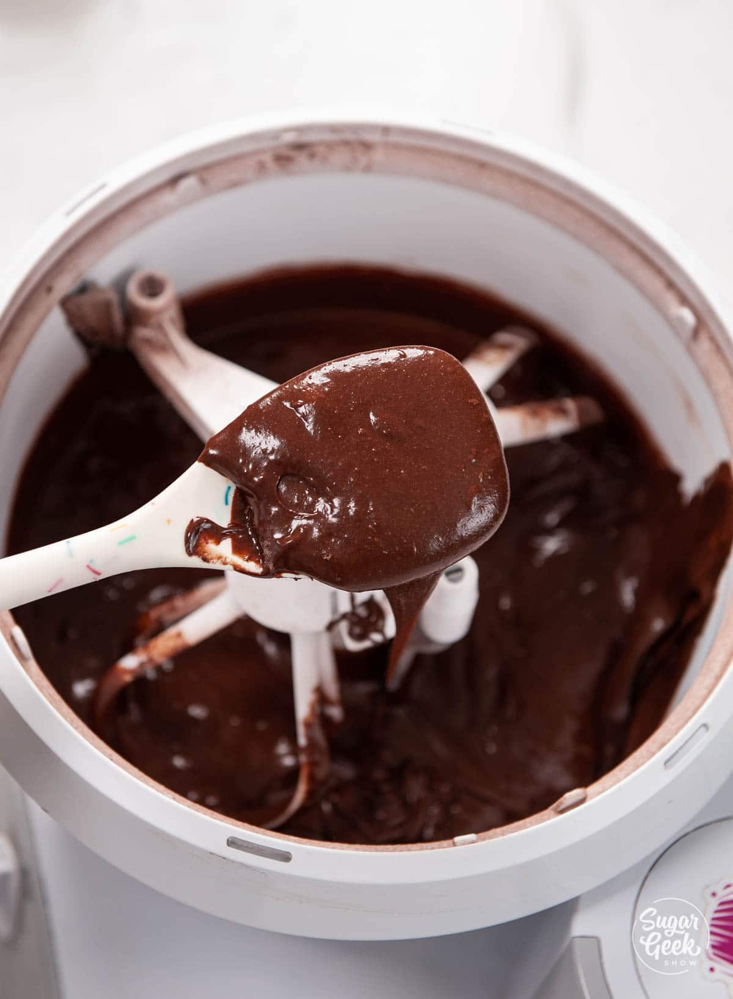

This super easy chocolate cake recipe uses simple ingredients, one bowl, and takes only 35 minutes to bake. You could be eating a delicious moist chocolate cake in an hour! So let's get started.
Image: Easy Chocolate Cake. This is my go-to easy recipe for a birthday cake and it goes fantastic with a scoop of ice cream! I'm filling this two-layer cake with a classic chocolate buttercream that uses powdered sugar and cocoa powder but if you REALLY want to amp up the chocolate flavor you might check out my chocolate fudge frosting recipe. This is also the perfect dessert for when your sweet tooth is just craving a nice warm piece of chocolate cake!
Ingredients
2 cups all purpose flour
1 cup sugar
1 cup brown sugar packed
1 cup cocoa powder Hershey's
1 ½ teaspoon baking powder
2 teaspoon baking soda
1 teaspoon salt
2 large eggs
1 cup buttermilk
1 cup hot coffee or hot water
½ cup vegetable oil
2 teaspoon vanilla extract
How To Make Easy Chocolate Cake Step-By-Step
1. Brew your hot coffee or prepare your boiling water.
This is important but believe it or not, hot coffee is the secret flavor in chocolate ckae but you just taste it!
2. Preheat your oven to 335ºF.
The lower heat prevents the cake from doming too much.
3. Prepare two 9" cake pans with some cake goop (homemade pan release) or use whatever type of of pan release you like.
It is better to use according to amount of batter you plann on making
4. Add all your ingredients (except the hot coffee) into a bowl and mix them together on medium speed until they are combined (about 30 seconds.)
It is not yet time for the hot coffee or boiling water to shine.
5. Add in the hot coffee and mix for 1 minute.
This is the secret to a moist chocolate cake! The batter will be very thin, but that is okay. It will bake up perfectly!

6. Pour the batter evenly into the two prepared cake pans.
Use a kitchen scale to weigh the batter if you want to be precise.
7. Bake the cakes for 30-35 minutes or until a toothpick inserted into the center comes out clean.
Let your cakes cool in the pans for 10-15 minutes then flip them out onto a cooling rack to fully cool down before frosting. I like to put mine in the freezer for 30 minutes to flash cool them so I can frost them right away.
How To Make Chocolate Frosting
Chocolate Frosting Ingredients
2 cups chocolate chips
½ cup corn syrup
1 cup unsalted butter, softened
2 cups powdered sugar, sifted
1 cocoa powder, sifted
1 teaspoon salt
1 teaspoon vanilla extract
¼ cup milk (or more as needed)
How To Make Chocolate Frosting Step-By-Step
1. Add the chocolate chips, milk, vanilla, and corn syrup to a microwave-safe mixing bowl.
2. Melt the chocolate mixture together in the microwave. Heat for 30 seconds and stir and then heat in 10-second increments and stir until it is fully melted and smooth. Let the chocolate mixture cool until it's barely warm.
3. Mix the butter, sugar, cocoa powder, and salt in the bowl of your stand mixer on low speed with the paddle on high speed for about 1 minute until light and fluffy. It will look dry at first, just keep going. You can also use a large bowl and an electric mixer if you prefer.
4. Add the cooled melted chocolate mixture to the butter mixture and mix until it is smooth and fluffy. The desired consistency of the frosting will be different depending on the temperature. If it is too stiff, warm it up slightly in the microwave and stir. If it is too soft let it sit in the refrigerator for a few minutes to set up.
5. The frosting can be used immediately to frost a cake or put into a piping bag for decorations.
6. Cover it with plastic wrap and store it at room temperature for 3 days. If you plan to keep it longer, keep it in an airtight container in the refrigerator or freezer.
These are tips to improve your baking skills.
1. If you have a big dome on your cake you can trim it down with a serrated knife to make it flat.
2. Place the first layer of cake onto your cake platter.
3. Put a big dollop of your fudge frosting onto the cake layer and smooth it out with an offset spatula.
4. Place the second layer of cake on top.
5. Cover the whole cake in a layer of frosting.
6. I use my offset spatula (or a spoon) to make swirls into the surface for the perfect-looking dessert. Add a few chocolate chips to the top to finish it all off.